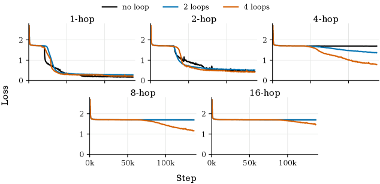
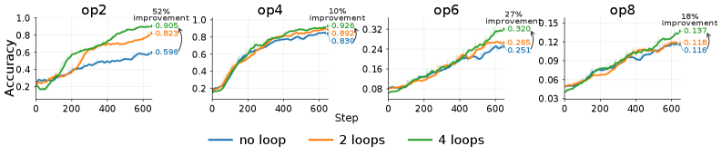
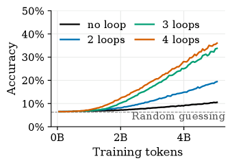
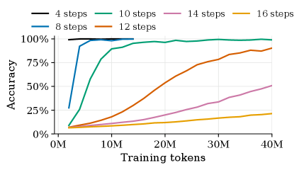

The paper proposes that converting evicted context into persistent fast weights via multiple offline recurrent passes (sleep) can overcome the reasoning depth bottleneck of SSM-attention hybrids, where vanilla models fail despite sufficient memory.
本文揭示了SSM-注意力混合模型在推理深度上的瓶颈，并提出一种类似睡眠的离线循环机制，通过多次遍历被驱逐的上下文来更新快速权重，从而显著提升深度推理能力。该方法在合成任务和数学推理数据集上验证了有效性，且不增加推理时的延迟。
Deep Note — llm-sleep
Key Takeaways - SSM-attention hybrid models fail on tasks requiring deep reasoning even when memory capacity is sufficient. - A sleep-like offline recurrence that updates fast weights via multiple passes over evicted context improves reasoning. - Increasing sleep duration N yields larger gains on examples that require deeper reasoning. - The method preserves wake-time latency by shifting computation to the sleep phase. - Validated on synthetic tasks (cellular automata, multi-hop graph retrieval) and GSM-Infinite math reasoning.
0) Metadata
- Title: Language Models Need Sleep
- Alias: llm-sleep
- Authors: Sangyun Lee, Sean McLeish, Tom Goldstein, Giulia Fanti
- arXiv ID: 2605.26099
- Published:
- Links:
- Abs: https://arxiv.org/abs/2605.26099
- HTML: https://arxiv.org/html/2605.26099v1
- PDF: https://arxiv.org/pdf/2605.26099
- Tags: sleep-consolidation, fast-weights, reasoning-depth, ssm-hybrid, offline-compute
- Domains: system_safety
- Rating: 4/5 (base 1 + quality 2 + observation 1)
1) Why-read
The paper proposes that converting evicted context into persistent fast weights via multiple offline recurrent passes (sleep) can overcome the reasoning depth bottleneck of SSM-attention hybrids, where vanilla models fail despite sufficient memory.
2) CRGP
C — Context
Transformer LLMs scale poorly with context length due to quadratic attention. Hybrid models combining attention with fixed-size fast weight memories (e.g., SSMs) improve memory scalability but their reasoning depth is limited. Prior work on context compression and test-time training uses single-pass updates, while depth-recurrent models increase compute at prediction time.
R — Related work
- Fast weights and linear RNNs (Gated Delta Nets, Mamba) provide fixed-size memory but struggle with exact retrieval and deep reasoning.
- Context compression methods (e.g., ICAE, self-study) condense context into shorter sequences but keep it in attention window.
- Context distillation uses gradient descent on predefined losses; this paper uses a learned recurrent forward pass.
- Test-time training (Tandon et al., Zhang et al.) performs one gradient step per chunk; this paper uses multiple recurrent passes.
- Depth-recurrent models (looped transformers) increase depth at prediction time; this paper shifts compute to an offline sleep phase.
- Offline planning in neuroscience (hippocampal replay) inspires the sleep-like consolidation mechanism.
G — Gap
Existing hybrid models with fixed-size fast weights can store long-range information but fail when reasoning depth increases, even if memory load is held constant. Prior methods for context consolidation use only a single pass or gradient step, limiting the transformation of evicted context into useful weight memory. The paper identifies that the bottleneck is not memory capacity but the amount of computation available for consolidation.
P — Proposal
The authors introduce a sleep-like consolidation mechanism where, when the context window is full, the model performs N offline recurrent passes over the accumulated context, updating fast weights in SSM blocks via a learned local rule. During inference, the KV cache is cleared and the model uses the updated fast weights, shifting extra computation to sleep while preserving wake-time latency. The model is trained end-to-end with backpropagation through the entire sleep process.
---
4) Experiments
Main results
On synthetic tasks (cellular automata, multi-hop graph retrieval), vanilla Gated Delta Nets (GDNs) fail as reasoning depth increases, while the sleep model with N=4 achieves >90% accuracy on deep reasoning instances. On GSM-Infinite math reasoning, the sleep model outperforms GDNs and hybrid baselines, with accuracy improving from ~40% to ~60% as N increases from 1 to 4.
Ablation
Increasing sleep duration N from 1 to 4 yields consistent performance gains, with the largest improvements on examples requiring the deepest reasoning (e.g., 8-hop graph retrieval accuracy rises from ~50% to ~95% as N increases).
Limitations
['The method is evaluated on synthetic tasks and one math dataset; scaling to large-scale pretrained LLMs on diverse NLP benchmarks is not demonstrated.', 'The sleep phase adds offline compute cost, and the optimal N may depend on task complexity and context length.', 'The learned local update rule may not generalize to unseen reasoning patterns or distribution shifts.']
5) Why it matters
- Provides a principled way to decouple reasoning compute from inference latency, relevant for long-horizon tasks in your research.
- Shows that memory consolidation via recurrence can overcome reasoning depth limitations, which may apply to continual learning or memory-augmented agents.
- Bridges neuroscience-inspired sleep mechanisms with practical LLM architectures, offering a new direction for efficient long-context processing.
6) Next steps
- [ ] Evaluate the sleep mechanism on larger pretrained LLMs (e.g., Llama, GPT) with diverse long-context benchmarks.
- [ ] Explore adaptive sleep duration based on task difficulty or context complexity.
- [ ] Investigate combining sleep with other memory mechanisms (e.g., retrieval-augmented generation) for hybrid reasoning.
- [ ] Analyze the learned local update rule to understand what representations are consolidated during sleep.
7) Scoring
4/5 = base 1 + quality 2 + observation 1
语言模型需要睡眠
主要结论 - SSM-注意力混合模型在需要深度推理的任务上会失败，即使记忆容量足够。 - 一种类似睡眠的离线循环机制，通过多次遍历被驱逐的上下文来更新快速权重，可以改善推理能力。 - 增加睡眠时长N在需要更深推理的样本上带来更大收益。 - 该方法通过将计算转移到睡眠阶段，保持了推理时的低延迟。 - 在合成任务（元胞自动机、多跳图检索）和GSM-Infinite数学推理上得到验证。
1) 阅读理由
本文提出通过多次离线循环遍历被驱逐的上下文并将其转化为持久快速权重（睡眠），可以克服SSM-注意力混合模型的推理深度瓶颈，而普通模型即使记忆充足也会失败。
2) CRGP（背景 / 相关工作 / 差距 / 方案）
上下文：Transformer LLM因二次注意力机制在长上下文上扩展性差。结合注意力和固定大小快速权重记忆（如SSM）的混合模型改善了记忆可扩展性，但推理深度受限。先前关于上下文压缩和测试时训练的工作使用单次更新，而深度循环模型增加了预测时的计算量。相关工作：快速权重和线性RNN（Gated Delta Nets, Mamba）提供固定大小记忆，但在精确检索和深度推理上表现不佳。上下文压缩方法（如ICAE, self-study）将上下文压缩为更短序列，但仍保留在注意力窗口内。上下文蒸馏使用预定义损失的梯度下降；本文使用学习的循环前向传播。测试时训练（Tandon等人, Zhang等人）每块执行一个梯度步；本文使用多次循环遍历。深度循环模型（循环Transformer）在预测时增加深度；本文将计算转移到离线睡眠阶段。神经科学中的离线规划（海马体回放）启发了类似睡眠的巩固机制。差距：现有固定大小快速权重的混合模型可以存储长距离信息，但在推理深度增加时失败，即使记忆负载保持不变。先前的上下文巩固方法仅使用单次遍历或梯度步，限制了将被驱逐的上下文转化为有用权重记忆的能力。本文指出瓶颈不是记忆容量，而是可用于巩固的计算量。提案：作者引入了一种类似睡眠的巩固机制，当上下文窗口满时，模型对累积的上下文执行N次离线循环遍历，通过学习的局部规则更新SSM块中的快速权重。推理时，KV缓存被清除，模型使用更新后的快速权重，将额外计算转移到睡眠阶段，同时保持推理时延迟。模型通过整个睡眠过程的反向传播进行端到端训练。
3) 实验
在合成任务（元胞自动机、多跳图检索）上，普通Gated Delta Nets (GDNs) 随着推理深度增加而失败，而睡眠模型（N=4）在深度推理实例上达到>90%的准确率。在GSM-Infinite数学推理上，睡眠模型优于GDNs和混合基线，准确率从N=1时的约40%提升到N=4时的约60%。
消融实验
增加睡眠时长N从1到4带来一致的性能提升，其中对需要最深推理的样本提升最大（例如，8跳图检索准确率随N增加从约50%提升到约95%）。
局限性
['该方法仅在合成任务和一个数学数据集上评估；未展示在多样化NLP基准上对大规模预训练LLM的扩展。', '睡眠阶段增加了离线计算成本，最优N可能依赖于任务复杂度和上下文长度。', '学习的局部更新规则可能无法泛化到未见过的推理模式或分布偏移。']
4) 重要性
- 提供了一种将推理计算与推理延迟解耦的原则性方法，对研究中的长时任务具有参考价值。
- 表明通过循环进行记忆巩固可以克服推理深度限制，可能适用于持续学习或记忆增强型智能体。
- 将神经科学启发的睡眠机制与实用LLM架构相结合，为高效长上下文处理提供了新方向。
5) 下一步
- [ ] 在更大规模的预训练LLM（如Llama, GPT）上评估睡眠机制，使用多样化的长上下文基准。
- [ ] 探索基于任务难度或上下文复杂度的自适应睡眠时长。
- [ ] 研究将睡眠与其他记忆机制（如检索增强生成）结合以实现混合推理。
- [ ] 分析学习的局部更新规则，以理解睡眠期间巩固了哪些表征。



